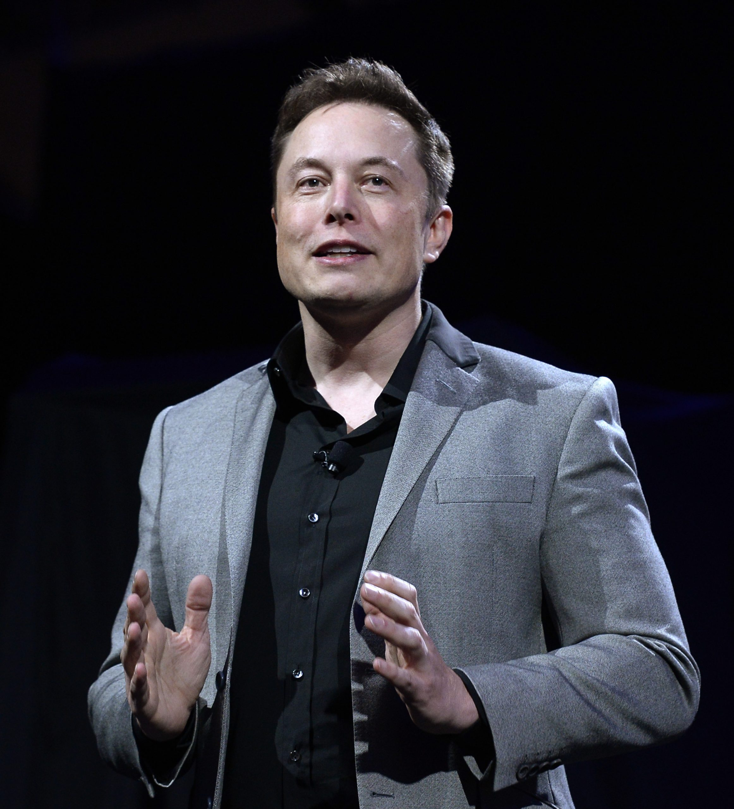

june 28,1971
“When something is important enough, you do it even if the odds are not in your favor.”
Elon Reeve Musk FRS (/ˈiːlɒn/; born June 28, 1971) is a businessman and investor known for his key roles in
space company SpaceX and automotive company Tesla, Inc. Other involvements include ownership of X Corp., the
company that operates the social media platform X (formerly known as Twitter), and his role in the founding
of The Boring Company, xAI, Neuralink and OpenAI. He is one of the wealthiest people in the world; as of
August 2024, Forbes estimates his net worth to be US$241 billion.[3]
Musk was born in Pretoria to model Maye and businessman and engineer Errol Musk, and briefly attended the
University of Pretoria before immigrating to Canada at age 18, acquiring citizenship through his
Canadian-born mother. Two years later, he matriculated at Queen's University at Kingston in Canada. Musk
later transferred to the University of Pennsylvania and received bachelor's degrees in economics and
physics. He moved to California in 1995 to attend Stanford University, but dropped out after two days and,
with his brother Kimbal, co-founded online city guide software company Zip2. The startup was acquired by
Compaq for $307 million in 1999. That same year, Musk co-founded X.com, a direct bank. X.com merged with
Confinity in 2000 to form PayPal. In October 2002, eBay acquired PayPal for $1.5 billion. Using $100 million
In 2004, Musk was an early investor who provided most of the initial financing in electric vehicle
manufacturer Tesla Motors, Inc. (later Tesla, Inc.), assuming the position of the company's chairman. He
later became the product architect, and in 2008 the CEO. In 2006, Musk helped create SolarCity, a solar
energy company that was acquired by Tesla in 2016 and became Tesla Energy. In 2013, he proposed a hyperloop
high-speed vactrain transportation system. In 2015, he co-founded OpenAI, a nonprofit artificial
intelligence research company. The following year, Musk co-founded Neuralink—a neurotechnology company
developing brain–computer interfaces—and The Boring Company, a tunnel construction company. In 2018, the
U.S. Securities and Exchange Commission (SEC) sued Musk, alleging that he had falsely announced that he had
secured funding for a private takeover of Tesla. To settle the case, Musk stepped down as the chairman of
Tesla and paid a $20 million fine. In 2022, he acquired Twitter for $44 billion, merged the company into
newly created X Corp. and rebranded the service as X the following year. In March 2023, Musk founded xAI, an
artificial intelligence company.
Musk has expressed views that have made him a polarizing figure.[4] He has been criticized for making
unscientific and misleading statements, including COVID-19 misinformation, promoting right-wing conspiracy
theories, and "endorsing an antisemitic theory",[5] the latter of which he later apologized for.[4][6] His
ownership of Twitter has been similarly controversial, being marked by layoffs of large numbers of
employees, an increase in hate speech, misinformation and disinformation posts on the website, and changes
to Twitter Blue verification.